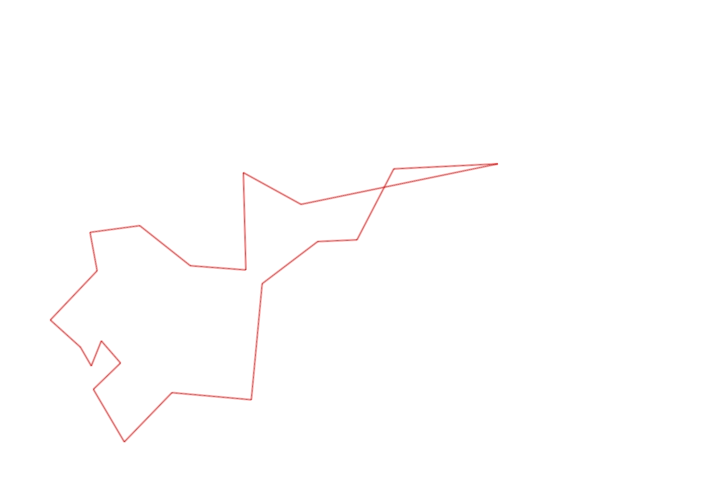
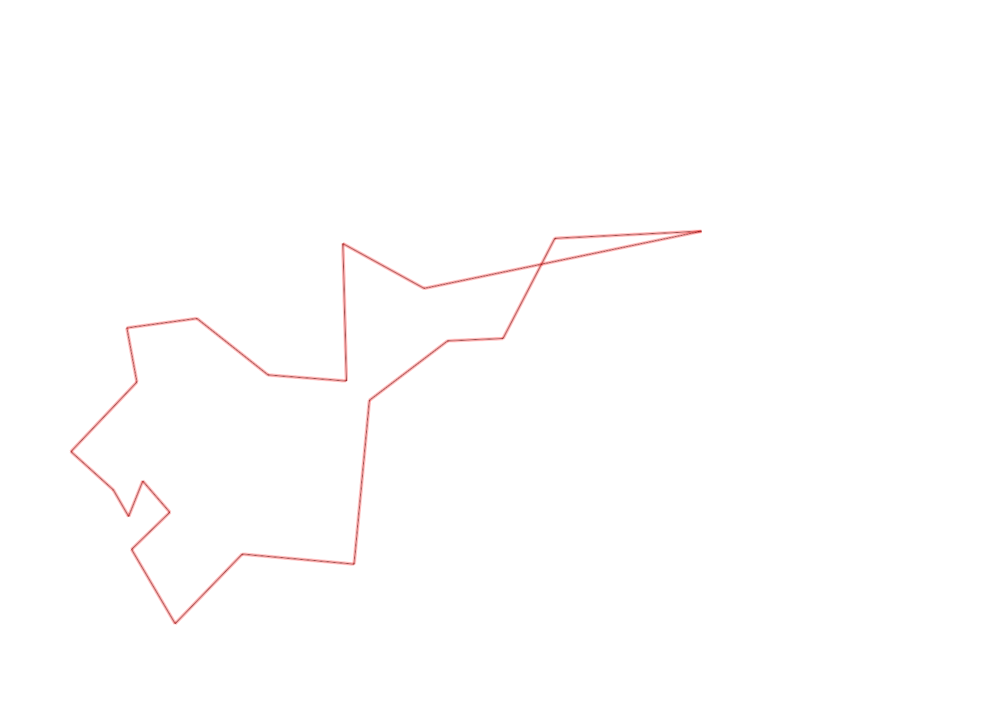

| Control |
Points |
Time Punched |
Distance |
Your Time |
Pace |
Place |
Fastest Time |
Median Time |
% Behind Fastest |
| 126 |
20 |
|
0.17 |
0:01:45 |
10:17 |
9 / 10 |
0:00:43 |
0:00:53 |
144% |
| 63 |
60 |
|
0.19 |
0:00:56 |
04:54 |
1 / 4 |
0:00:56 |
0:01:20 |
0% |
| 32 |
30 |
|
0.15 |
0:00:48 |
05:20 |
7 / 27 |
0:00:36 |
0:00:56 |
33% |
| 44 |
40 |
|
0.12 |
0:03:38 |
30:16 |
28 / 29 |
0:00:52 |
0:01:49 |
319% |
| 53 |
50 |
|
0.2 |
0:01:31 |
07:35 |
1 / 26 |
0:01:31 |
0:02:15 |
0% |
| 69 |
60 |
|
0.12 |
0:01:09 |
09:35 |
9 / 29 |
0:00:45 |
0:01:18 |
53% |
| 71 |
70 |
|
0.06 |
0:01:08 |
18:53 |
11 / 25 |
0:00:48 |
0:01:13 |
41% |
| 54 |
50 |
|
0.08 |
0:00:35 |
07:17 |
8 / 33 |
0:00:27 |
0:00:45 |
29% |
| 41 |
40 |
|
0.09 |
0:01:41 |
18:42 |
6 / 13 |
0:01:01 |
0:01:43 |
65% |
| 40 |
40 |
|
0.11 |
0:00:55 |
08:20 |
9 / 24 |
0:00:45 |
0:01:00 |
22% |
| 77 |
70 |
|
0.18 |
0:02:21 |
13:03 |
10 / 21 |
0:01:35 |
0:02:21 |
48% |
| 59 |
50 |
|
0.21 |
0:04:13 |
20:04 |
18 / 18 |
0:02:00 |
0:02:47 |
110% |
| 61 |
60 |
|
0.24 |
0:03:14 |
13:28 |
8 / 19 |
0:02:14 |
0:03:16 |
44% |
| 127 |
20 |
|
0.35 |
0:05:42 |
16:17 |
1 / 2 |
0:05:42 |
0:05:43 |
0% |
| 92 |
90 |
|
0.21 |
0:04:33 |
21:40 |
4 / 6 |
0:02:15 |
0:04:11 |
102% |
| 47 |
40 |
|
0.12 |
0:06:04 |
50:33 |
10 / 16 |
0:01:07 |
0:04:40 |
443% |
| 123 |
20 |
|
0.24 |
0:03:57 |
16:27 |
5 / 5 |
0:02:23 |
0:02:41 |
65% |
| 109 |
100 |
|
0.31 |
0:03:49 |
12:18 |
7 / 7 |
0:02:09 |
0:02:32 |
77% |
| 57 |
50 |
|
0.6 |
0:08:31 |
14:11 |
1 / 1 |
0:08:31 |
0:08:31 |
0% |
| 107 |
100 |
|
0.2 |
0:02:16 |
11:20 |
7 / 21 |
0:00:00 |
0:02:52 |
-% |
| Finish |
0 |
|
0.29 |
0:02:49 |
09:42 |
1 / 2 |
0:02:49 |
0:26:46 |
0% |
Total Distance Covered: 4.24km
Points Scored: 1060
Late Penalty: -40
Final Score: 1020
Total Time: 1hours 1minutes 35seconds
Efficiency: 240.57 points/km
 
